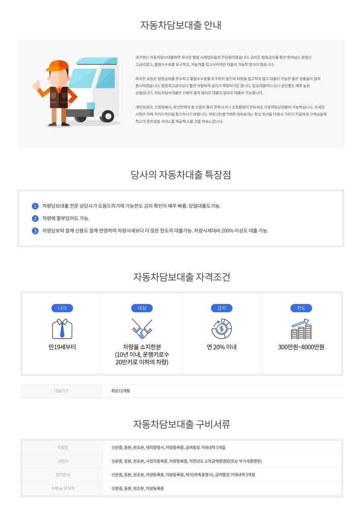
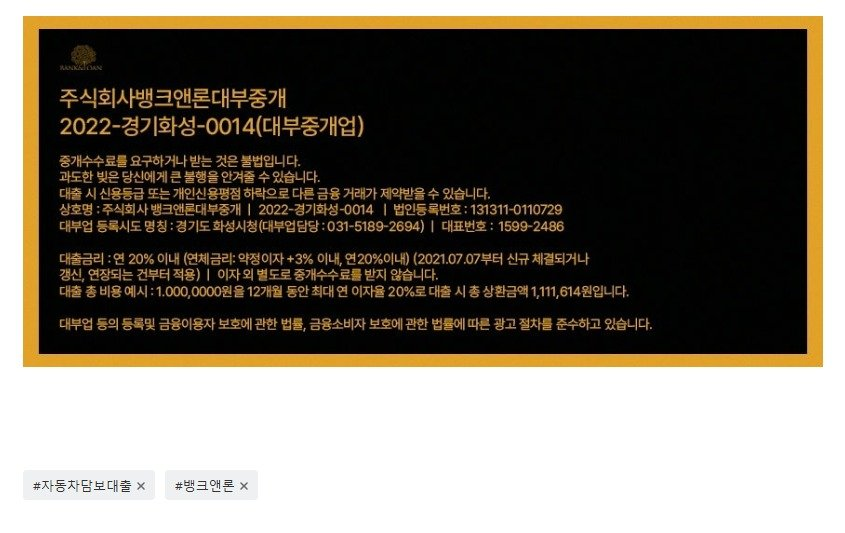

[자동차담보대출필독사례모음] 자동차담보대출 매니저 사례 모음 (자동차담보대출 필독!!)

[자동차담보대출] 신용회복 유예중 차량 시세대비 100% 할부 대출 받은 차량 구입 후 한달도 안되어서 대부업권도 다 부결이였으나 결국 웰* 에서 승인 (절대 포기 않고 수일동안 접수 진행 도움 드려서 결국 승인)
https://cafe.naver.com/cityman88/310241
원본 백업에 없거나 외부 접근이 제한된 이미지입니다.
[자동차담보대출] 신용회복 유예중 차량 시세대비 100% 할부 대출 받은 차량 구입 후 한달도 안되어서 대부업권도 다 부결이였으나 결국 웰* 에서 승인 (절대 포기 않고 수일...
오늘 소개해드릴 사례는 자동차담보대출 사례입니다. 난이도가 매우 극상 이였습니다. 회복중이셨는데 유예중이셨고 월 9만원 납부인데 두달 미납중이셨고요.. 차량은 풀할부로 구입하...
[자동차담보대출] 신용평점 550점, 기대출과다, 시세 2천정도 되는 차량으로 3천만 승인사례, (저신용 사업자 자동차 담보대출 승인사례.)
https://cafe.naver.com/cityman88/310161
원본 백업에 없거나 외부 접근이 제한된 이미지입니다.
[자동차담보대출] 신용평점 550점, 기대출과다, 시세 2천정도 되는 차량으로 3천만 승인사례, (저신용 사업자 자동차 담보대출 승인사례.)
안녕하세요~ 주식회사 뱅크앤론 대부중개 입니다. 당사는 업력 16년 이상된,10년이상 대출/금융업 부분 고객만족 및 브랜드대상을 수상한 믿을 수 있는 기업입니다. (수상기관 ...
[자동차담보대출 3400만 승인] 21년식 스파크 차량으로의 자동차담보대출 3400만 승인사례 (kcb 710점, 법인대표)
https://cafe.naver.com/cityman88/310123
원본 백업에 없거나 외부 접근이 제한된 이미지입니다.
[자동차담보대출 3400만 승인] 21년식 스파크 차량으로의 자동차담보대출 3400만 승인사례 (kcb 710점, 법인대표)
오늘은 자동차담보대출 사례를 소개해드리겠습니다. 자동차담보대출은 다른 담보대출과 마찬가지로 보통 차량시세대비 60~80% 정도의 한도를 많이 생각하시지만, 신용평점이 나쁘지않...
[자동차담보대출] 시세25백이하 차량으로 5000만 승인사례. (연소득 45백만원에 기대출은 7천만이상. 신용평점 600점대)
https://cafe.naver.com/cityman88/309908
원본 백업에 없거나 외부 접근이 제한된 이미지입니다.
[자동차담보대출] 시세25백이하 차량으로 5000만 승인사례. (연소득 45백만원에 기대출은 7천만이상. 신용평점 600점대)
안녕하세요 카페매니저 김용혁 입니다. 오늘 소개해드릴 대출사례는 자동차담보대출 입니다. 오늘 사례의 주인공분은 신용평점이 600대로 낮으셨고 연소득은 45백정도 셨는데 기대출...
https://www.youtube.com/watch?v=PDxvfq_jwhw&feature=youtu.be

https://cafe.naver.com/cityman88/310246